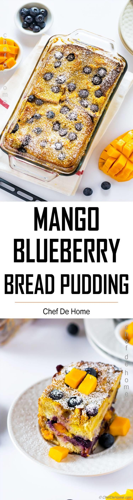

Mango Blueberry Bread Pudding

Description
An excellent recipe that will excite your taste buds, while keeping you
strong and healthy! This meal is easy to make on any
weekday night after you come home from work and need to feed the whole family.
Be sure to bookmark this one so you can come back and whip up a new batch every
week!
Ingredients
- White Bread
- Mango
- Blueberries
- Sugar
- Eggs
- Milk
- Heavy Cream
- Vanilla Extract
- Cardamom
- Butter
- Salt
- Powdered Sugar
Steps
- Create Mango Puree.
- Tear stale bread and arrange layers in deep ceramic or glass pan
- Alternate bread, fruit, and mango puree until pan is full.
- Bake in oven at 450° for about 50 minutes.